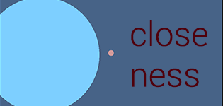
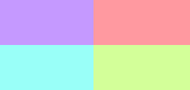

|  |
Closeness is a small experiment
about a feeling that I often have. The gameplay is a metaphor. You can play it here |
|  |
Color is a small
color generator tool. Originally started making it for a game. Space generates a new color,
right/left changes hue, up/down changes lightness (HSL colors). Play it here |
 |
Wake Up // Sleep Forever
is an arcade game about sleeping. You try to defend yourself as your thoughts invade
your dreams. Getting hit by an enemy changes your control type. Play it
here |
| WIP |
Anxiety is a mockup.
It's far from finished. The art direction
has been prototyped here. NOTE: Often requires a refresh for the page to load correctly. |
| Code Snippets |
| Steam Recommendation Algorithm |
Link |
| Insertion Sort |
Link |
| POSIX shell |
Link |